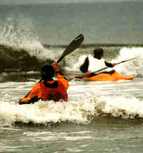
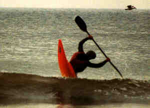
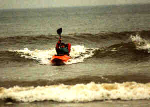
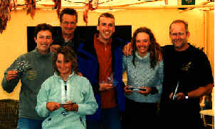

| ‘CLEAN
WAVES’ tijdens Branding-rodeowedstrijd 2000 |
| Tekst: Leo Tetteroo, NKB-brandingcommissie Foto's: Esther Tierolf, Wendy van Rijn |
| Na een mislukte sessie in 1999 is
het dit jaar weer gelukt. De brandingomstandigheden
lieten het toe dat in Ter Heijde op zondag 21 mei 2000 de
Branding-rodeowedstrijd werd gehouden. De ervaring leert dat het niet zo vanzelfsprekend is dat er voldoende geschikte golven aanwezig zijn voor de wedstrijd. In 1999 werd de wedstrijd op beide geplande data afgelast wegens gebrek aan golven. Ook op de eerste geplande datum voor dit jaar (14 mei) ging de wedstrijd niet door. Het was toen met zo’n 25 °C wel zeer mooi strandweer, maar we hadden te maken met een onbruikbaar strijdperk: een zeetje zo glad als een spiegel. En dat terwijl het weekeind na de wedstrijd (28 mei) de zee weer onbevaarbaar was vanwege een zuidwesten storm met kracht 10! Duidelijk is: bij het brandingkajakken zijn we overgeleverd aan de grilligheid van de natuur. |
 |
| Maar gelukkig, na regen komt zonneschijn.
Of in ons geval eigenlijk precies andersom: na de
zonneschijn van 14 mei kregen we te maken met
weersdepressies. Tussen IJsland en Noorwegen kwam
gedurende een periode van een aantal dagen een
lagedrukgebied te liggen. Dit zorgde daar ter plaatse
voor flink wat storm. Hier voor ons betekende het regen
en wind vanuit de noordwest hoek. Maar vooral: een
periode met veel wind in het noorden, ter hoogte van
IJsland, veroorzaakt DEINING in de Noordzee! Op basis van
deze aanwezige deining werd zaterdag, de dag voor de
wedstrijd, besloten een serieuze poging te wagen de
wedstrijd door te laten gaan. Dit ondanks het geldende
weerbericht waarin een, voor golven ongunstige, afnemende
wind draaiend naar het zuidoosten werd voorspeld. Je begrijpt wel dat al het geharrewar, over het wel of niet doorgaan van de wedstrijd, een flexibele en snel inzetbare organisatie vereist. Dit geldt voor het organisatie-team, maar natuurlijk ook voor de deelnemers die m.b.v. ingesproken telefoon-beantwoorders op de hoogte werden gesteld dat een autorit naar Ter Heijde niet tevergeefs zou worden gemaakt. Uiteindelijk werden we op de wedstrijdzondag verwend op ideale deininggolven die als rechte lijnen onbelemmerd doorliepen tot aan het strand en zelfs de lichte aflandige wind werkte mee deze ‘clean waves’ extra op te stuwen. Dat het als toegift op de weersvoorspelling ook nog eens langdurig regende werd met deze unieke golven als bijzaak ervaren. Deelnemers afkomstig van kanoverenigingen en buitensportbedrijven uit het gehele land meldden zich bij de inschrijving. Kortom, alle ingrediënten om van de wedstrijd weer een ware happening te maken waren alom aanwezig. |
 |
De heats van de eerste wedstrijdronde
werden ingedeeld volgens het geldende rankingschema. Al
direct bleek dat de golven perfect waren voor de
uitvoering lange surfs en spectaculaire moves. Juist
doordat de golven zo strak liepen was het innemen van de
juiste positie op de golf door de deelnemers goed te
bepalen, en kon de inzet van een rodeo-move exact getimed
worden. De resultaten waren er dan ook naar. De jury moest alle zeilen bijzetten om alle acties waar te nemen en op de juiste wijze van uitvoering te beoordelen. Om zoveel mogelijk punten te behalen was het voor de deelnemers van belang dat een golf zo goed mogelijk werd benut voor surf- en afsluitmoves. Behalve de horizontale surfmoves, zoals bijvoorbeeld een 360° flat-spin of een shuvit, werden ook de verticale moves, zoals loops en pirouettes maar ook cartwheels uitgevoerd om te voldoen aan de eis dat gedurende de heat zoveel mogelijk variatie getoond moest worden. |
| Alleen de beste vaarders van een heat
stromen door naar de volgende ronde. Als deelnemer
betekent dit dat je onder tijdsdruk van de aflopende
heattijdsduur een zo goed mogelijke prestatie moet
leveren. De spanning gedurende de wedstrijd was dan ook merkbaar te snijden. Feitelijk bleek dit al tijdens de eerste ronde, waarin enkele prominente vaarders afvielen. Omdat al de deelnemers binnen één heat onder dezelfde omstandigheden varen, is de oorzaak hiervan niet te wijten aan een eventuele verminderde kwaliteit van golven. De afvallers van de eerste ronde hadden echter nog wel de mogelijkheid om via de herkansingsronde terug te keren in de wedstrijd. Een van deze afvallers was Wil Prins. Hij wist zich na zijn herkansing zodanig te herstellen dat hij uiteindelijk de finale won. De hoogste heat-puntenuitslag van de gehele wedstrijd werd behaald in de halve finale door Remi Wegman. In de finale wilde het hem jammerlijk niet lukken. Gezien zijn leeftijd (15 jaar) mag wel duidelijk zijn dat we van deze knaap in de toekomst nog veel kunnen verwachten. Ondanks de spanning werd onderling heel sportief gevaren. Het viel de jury regelmatig op dat de deelnemers van een heat elkaar enthousiast toejuichten als een bijzondere move met succes werd uitgevoerd. De damesheats vertoonden een kwalitatief zeer hoogstaand vaarniveau. Misschien dat juist de dames nog de meeste profijt hebben aan de huidige ontwikkelingen van het kajakmateriaal. Het was Wendy van Rijn die bij de dames met de eer ging strijken. |
| Gedurende de gehele wedstrijddag waren de nieuwste typen rodeokajaks aanwezig om uit te testen. Deze bootjes werden via Zwalker, HD-Kanosport en de brandingcommissie beschikbaar gesteld door het kajakcentrum in Wormer. Hieraan werd met name door wedstrijddeelnemers die vroegtijdig afvielen veel plezier beleeft. Voor de deelnemers die zich in het afvalsysteem wisten te handhaven tot aan de eindrondes gold dat zij, door de langere vaartijd die hiermee gemoeid is, te kampen kregen met afkoeling. Om dit tegen te gaan werd door de strandtenthouders van ‘Strandcate Pauze’ (van waaruit de wedstrijd werd georganiseerd) de kachel nog eens extra opgestookt. |  |
| Na afloop van de Branding-rodeowedstrijd
hebben we kunnen vaststellen dat het rodeokajakken
duidelijk in de lift zit voor wat betreft nieuwe moves
die worden uitgevoerd in de branding. Dit is mede te
danken aan het beschikbare kajakmateriaal dat op dit
moment drastische ontwikkelingen ondergaat. |
Uitslag:
|
 |
||||||||||||||||||||||||
| Klik hier voor meer foto's | |||||||||||||||||||||||||